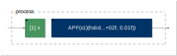
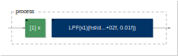
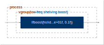
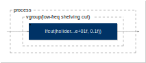
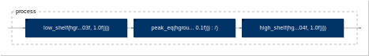
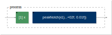
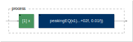
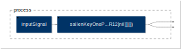

filtering
APF

// WARNING: This a "legacy example based on a deprecated library". Check filters.lib
// for more accurate examples of filter functions
declare name "APF";
import("maxmsp.lib");
G = hslider("Gain [unit:dB]", 0, -10, 10, 0.1);
F = hslider("Freq", 1000, 100, 10000, 1);
Q = hslider("Q", 1, 0.01, 100, 0.01);
process(x) = APF(x,F,G,Q);
BPF
// WARNING: This a "legacy example based on a deprecated library". Check filters.lib
// for more accurate examples of filter functions
declare name "BPF";
import("maxmsp.lib");
G = hslider("Gain [unit:dB]", 0, -10, 10, 0.1);
F = hslider("Freq", 1000, 100, 10000, 1);
Q = hslider("Q", 1, 0.01, 100, 0.01);
process(x) = BPF(x,F,G,Q);
DNN
// Forward Deep Neural Net (DNN), any number of layers of any size each
declare name "DNN";
declare author "JOS";
declare license "STK-4.3";
import("stdfaust.lib");
layerSizes = (8,5,8); // autoencoder with 8 in & out, 5-state hidden layer
w(m,n,k) = m*100+n*10+k; // placeholder weights: m=layer, n=fromNode, k=destNode
M = ba.count(layerSizes);
N(l) = ba.take(l+1,layerSizes); // Nodes per layer
process = seq(m, M-1, layer(m))
// look at weights:
// process = par(m,M,par(n,N(m),par(k,N(m),w(m,n,k))))
with {
layer(m) = weights(m) :> nonlinearities(m);
nonlinearities(m) = bus(N(m)*N(m+1)) :> par(n,N(m+1),nl(n));
weights(m) = bus(N(m)) <: par(n,N(m),(bus(N(m+1))<:wts(m,n)));
wts(m,n) = bus(N(m+1)) : par(k,N(m+1),*(w(m,n,k)));
nl(n,x) = x * (x>0); // ReLU
bus(N) = par(k,N,_);
};
HPF
// WARNING: This a "legacy example based on a deprecated library". Check filters.lib
// for more accurate examples of filter functions
declare name "HPF";
import("maxmsp.lib");
G = hslider("Gain [unit:dB]", 0, -10, 10, 0.1);
F = hslider("Freq", 1000, 100, 10000, 1);
Q = hslider("Q", 1, 0.01, 100, 0.01);
process(x) = HPF(x,F,G,Q);
LPF

// WARNING: This a "legacy example based on a deprecated library". Check filters.lib
// for more accurate examples of filter functions
declare name "LPF";
import("maxmsp.lib");
G = hslider("Gain [unit:dB]", 0, -10, 10, 0.1);
F = hslider("Freq", 1000, 100, 10000, 1);
Q = hslider("Q", 1, 0.01, 100, 0.01);
process(x) = LPF(x,F,G,Q);
bandFilter

// WARNING: This a "legacy example based on a deprecated library". Check filters.lib
// for more accurate examples of filter functions
declare name "bandFilter";
declare version "1.0";
declare author "Grame";
declare license "BSD";
declare copyright "(c)GRAME 2006";
import("stdfaust.lib");
//---------------------second order filter--------------------------
// filter(Q,F,G)
// Q : quality factor [1..100]
// F : frequency (Hz)
// G : gain [0..1]
//------------------------------------------------------------------
filter(Q,F,G) = fi.TF2( (1 + K/Q + K*K) / D,
2 * (K*K - 1) / D,
(1 - K/Q + K*K) / D,
2 * (K*K - 1) / D,
(1 - V*K/Q + K*K) / D
)
with {
V = ba.db2linear(G);
K = tan(ma.PI*F/ma.SR);
D = 1 + V*K/Q + K*K;
};
//--------------- Band Filter with user interface ------------------
// bandfilter(F)
// F : default frequency (Hz)
//
//------------------------------------------------------------------
bandfilter(F) = filter( nentry("Q factor [style:knob]",50,0.1,100,0.1),
nentry("freq [unit:Hz][style:knob]", F, 20, 20000, 1),
0 - vslider("gain [unit:dB]", 0, -50, 50, 0.1)
);
//------------------------- Process --------------------------------
process = vgroup("Bandfilter", bandfilter(1000));
cryBaby
declare name "cryBaby";
declare description "Application demonstrating the CryBaby wah pedal emulation";
import("stdfaust.lib");
process = dm.crybaby_demo;
diodeLadder
declare name "diodeLadder";
declare description "Demonstration of diodeLadder";
declare author "Eric Tarr";
import("stdfaust.lib");
Q = hslider("Q",1,0.7072,25,0.01);
normFreq = hslider("freq",0.1,0,1,0.001):si.smoo;
switch = checkbox("Saw/Noise");
inputSignal = (no.noise *switch) , (os.sawtooth(100)*(1-switch)) :> _;
process = inputSignal : ve.diodeLadder(normFreq,Q) <:_,_;
filterBank
declare name "filterBank";
declare description "Graphic Equalizer consisting of a filter-bank driving a bank of faders";
import("stdfaust.lib");
process = dm.filterbank_demo;
graphicEqLab
declare name "graphicEqLab";
declare description "Signal generators through a filter bank with spectrum analysis display";
import("stdfaust.lib");
process =
// ol.sawtooth_demo : fl.filterbank_demo : fl.spectral_level_demo <: _,_;
vgroup("[1]",dm.sawtooth_demo) :
vgroup("[2]",dm.filterbank_demo) :
vgroup("[3]",dm.spectral_level_demo) <:
_,_;
highShelf

// WARNING: This a "legacy example based on a deprecated library". Check filters.lib
// for more accurate examples of filter functions
declare name "highShelf";
import("maxmsp.lib");
G = hslider("Gain [unit:dB]", 0, -10, 10, 0.1);
F = hslider("Freq", 1000, 100, 10000, 1);
Q = hslider("Q", 1, 0.01, 100, 0.01);
process(x) = highShelf(x,F,G,Q);
korg35HPF
declare name "korg35HPF";
declare description "Demonstration of the Korg 35 HPF";
declare author "Eric Tarr";
import("stdfaust.lib");
Q = hslider("Q",1,0.5,10,0.01);
normFreq = hslider("freq",0.5,0,1,0.001):si.smoo;
switch = checkbox("Saw/Noise");
inputSignal = (no.noise *switch) , (os.sawtooth(100)*(1-switch)) :> _;
process = inputSignal : ve.korg35HPF(normFreq,Q) <:_,_;
korg35LPF
declare name "korg35LPF";
declare description "Demonstration of the Korg 35 LPF";
declare author "Eric Tarr";
import("stdfaust.lib");
Q = hslider("Q",1,0.5,10,0.01);
normFreq = hslider("freq",0.5,0,1,0.001):si.smoo;
switch = checkbox("Saw/Noise");
inputSignal = (no.noise *switch) , (os.sawtooth(100)*(1-switch)) :> _;
process = inputSignal : ve.korg35LPF(normFreq,Q) <:_,_;
lfBoost
// WARNING: This a "legacy example based on a deprecated library". Check filters.lib
// for more accurate examples of filter functions
declare name "lfboost";
declare version "1.0";
declare author "Grame";
declare license "BSD";
declare copyright "(c)GRAME 2006";
//------------------------------------------------------------------
// DAFX, Digital Audio Effects (Wiley ed.)
// chapter 2 : filters
// section 2.3 : Equalizers
// page 53 : second order shelving filter design
//------------------------------------------------------------------
import("stdfaust.lib");
//----------------------low frequency boost filter -------------------------------
// lfboost(F,G)
// F : frequency (in Hz)
// G : gain (in dB)
//
//--------------------------------------------------------------------------------
lfboost(F,G) = fi.TF2((1 + sqrt(2*V)*K + V*K*K) / denom,
2 * (V*K*K - 1) / denom,
(1 - sqrt(2*V)*K + V*K*K) / denom,
2 * (K*K - 1) / denom,
(1 - sqrt(2)*K + K*K) / denom)
with {
V = ba.db2linear(G);
K = tan(ma.PI*F/ma.SR);
denom = 1 + sqrt(2)*K + K*K;
};
//====================low frequency boost process ===============================
process = vgroup("lowboost", lfboost(nentry("freq [unit:Hz][style:knob]", 100, 20, 150, 1),
vslider("gain [unit:dB]", 0, -20, 20, 0.1)));
lowBoost

// WARNING: This a "legacy example based on a deprecated library". Check filters.lib
// for more accurate examples of filter functions
declare name "lowboost";
declare version "1.0";
declare author "Grame";
declare license "BSD";
declare copyright "(c)GRAME 2006";
//------------------------------------------------------------------
// DAFX, Digital Audio Effects (Wiley ed.)
// chapter 2 : filters
// section 2.3 : Equalizers
// page 53 : second order shelving filter design
//------------------------------------------------------------------
import("stdfaust.lib");
//------------------- low-frequency shelving boost (table 2.3) --------------------
V0(g) = pow(10,g/20.0);
K(fc) = tan(ma.PI*fc/ma.SR);
square(x) = x*x;
denom(fc) = 1 + sqrt(2)*K(fc) + square(K(fc));
lfboost(fc, g) = fi.TF2((1 + sqrt(2*V0(g))*K(fc) + V0(g)*square(K(fc))) / denom(fc),
2 * (V0(g)*square(K(fc)) - 1) / denom(fc),
(1 - sqrt(2*V0(g))*K(fc) + V0(g)*square(K(fc))) / denom(fc),
2 * (square(K(fc)) - 1) / denom(fc),
(1 - sqrt(2)*K(fc) + square(K(fc))) / denom(fc));
//------------------------------ User Interface -----------------------------------
freq = hslider("[1]freq [unit:Hz][style:knob]", 1000, 20, 20000, 0.1);
gain = hslider("[2]gain [unit:dB][style:knob]", 0, -20, 20, 0.1);
//----------------------------------- Process -------------------------------------
process = vgroup("low-freq shelving boost", lfboost(freq,gain));
lowCut

// WARNING: This a "legacy example based on a deprecated library". Check filters.lib
// for more accurate examples of filter functions
declare name "lowcut";
declare version "1.0";
declare author "Grame";
declare license "BSD";
declare copyright "(c)GRAME 2006";
//------------------------------------------------------------------
// DAFX, Digital Audio Effects (Wiley ed.)
// chapter 2 : filters
// section 2.3 : Equalizers
// page 53 : second order shelving filter design
//------------------------------------------------------------------
import("stdfaust.lib");
//------------------- low-frequency shelving cut (table 2.3) --------------------
V0(g) = pow(10,g/-20.0);
K(fc) = tan(ma.PI*fc/ma.SR);
squ(x) = x*x;
denom(fc,g) = 1 + sqrt(2*V0(g))*K(fc) + V0(g)*squ(K(fc));
lfcut(fc, g) = fi.TF2((1 + sqrt(2)*K(fc) + squ(K(fc))) / denom(fc,g),
2 * (squ(K(fc)) - 1) / denom(fc,g),
(1 - sqrt(2)*K(fc) + squ(K(fc))) / denom(fc,g),
2 * (V0(g)*squ(K(fc)) - 1) / denom(fc,g),
(1 - sqrt(2*V0(g))*K(fc) + V0(g)*squ(K(fc))) / denom(fc,g));
//------------------------------ User Interface -----------------------------------
freq = hslider("freq [unit:Hz][style:knob]", 100, 20, 5000, 1);
att = hslider("attenuation [unit:dB][style:knob]", 0, -96, 10, 0.1);
//----------------------------------- Process -------------------------------------
process = vgroup("low-freq shelving cut", lfcut(freq,att));
lowShelf
// WARNING: This a "legacy example based on a deprecated library". Check filters.lib
// for more accurate examples of filter functions
declare name "lowShelf";
import("maxmsp.lib");
G = hslider("Gain [unit:dB]", 0, -10, 10, 0.1);
F = hslider("Freq", 1000, 100, 10000, 1);
Q = hslider("Q", 1, 0.01, 100, 0.01);
process(x) = lowShelf(x,F,G,Q);
moogHalfLadder

declare name "moogHalfLadder";
declare description "Demonstration of moogHalfLadder";
declare author "Eric Tarr";
import("stdfaust.lib");
Q = hslider("Q",1,0.7072,25,0.01);
normFreq = hslider("freq",0.1,0,1,0.001):si.smoo;
switch = checkbox("Saw/Noise");
inputSignal = (no.noise *switch) , (os.sawtooth(100)*(1-switch)) :> _;
process = inputSignal : ve.moogHalfLadder(normFreq,Q) <:_,_;
moogLadder
declare name "moogLadder";
declare description "Demonstration of moogLadder";
declare author "Eric Tarr";
import("stdfaust.lib");
Q = hslider("Q",1,0.7072,25,0.01);
normFreq = hslider("freq",0.1,0,1,0.001):si.smoo;
switch = checkbox("Saw/Noise");
inputSignal = (no.noise *switch) , (os.sawtooth(100)*(1-switch)) :> _;
process = inputSignal : ve.moogLadder(normFreq,Q) <:_,_;
moogVCF
declare name "moogVCF";
declare description "Exercise and compare three Moog VCF implementations";
import("stdfaust.lib");
process = dm.moog_vcf_demo;
notch
// WARNING: This a "legacy example based on a deprecated library". Check filters.lib
// for more accurate examples of filter functions
declare name "notch";
import("maxmsp.lib");
G = hslider("Gain [unit:dB]", 0, -10, 10, 0.1);
F = hslider("Freq", 1000, 100, 10000, 1);
Q = hslider("Q", 1, 0.01, 100, 0.01);
process(x) = notch(x,F,G,Q);
oberheim
declare name "oberheimBSF";
declare description "Demonstration of the Oberheim generic multi-outputs Filter";
declare author "Eric Tarr, GRAME";
import("stdfaust.lib");
Q = hslider("Q",1,0.5,10,0.01);
normFreq = hslider("freq",0.5,0,1,0.001):si.smoo;
switch = checkbox("Saw/Noise");
inputSignal = (no.noise*switch) , (os.sawtooth(100)*(1-switch)) :> _;
// The BSF, BPF, HPF and LPF outputs are produced
process = inputSignal : ve.oberheim(normFreq,Q);
oberheimBPF
declare name "oberheimBPF";
declare description "Demonstration of the Oberheim Band-Pass Filter";
declare author "Eric Tarr";
import("stdfaust.lib");
Q = hslider("Q",1,0.5,10,0.01);
normFreq = hslider("freq",0.5,0,1,0.001):si.smoo;
switch = checkbox("Saw/Noise");
inputSignal = (no.noise*switch) , (os.sawtooth(100)*(1-switch)) :> _;
process = inputSignal : ve.oberheimBPF(normFreq,Q) <:_,_;
oberheimBSF
declare name "oberheimBSF";
declare description "Demonstration of the Oberheim Band-Stop Filter";
declare author "Eric Tarr";
import("stdfaust.lib");
Q = hslider("Q",1,0.5,10,0.01);
normFreq = hslider("freq",0.5,0,1,0.001):si.smoo;
switch = checkbox("Saw/Noise");
inputSignal = (no.noise*switch) , (os.sawtooth(100)*(1-switch)) :> _;
process = inputSignal : ve.oberheimBSF(normFreq,Q) <:_,_;
oberheimHPF
declare name "oberheimHPF";
declare description "Demonstration of the Oberheim High-Pass Filter";
declare author "Eric Tarr";
import("stdfaust.lib");
Q = hslider("Q",1,0.5,10,0.01);
normFreq = hslider("freq",0.5,0,1,0.001):si.smoo;
switch = checkbox("Saw/Noise");
inputSignal = (no.noise*switch) , (os.sawtooth(100)*(1-switch)) :> _;
process = inputSignal : ve.oberheimHPF(normFreq,Q) <:_,_;
oberheimLPF
declare name "oberheimLPF";
declare description "Demonstration of the Oberheim Low-Pass Filter";
declare author "Eric Tarr";
import("stdfaust.lib");
Q = hslider("Q",1,0.5,10,0.01);
normFreq = hslider("freq",0.5,0,1,0.001):si.smoo;
switch = checkbox("Saw/Noise");
inputSignal = (no.noise*switch) , (os.sawtooth(100)*(1-switch)) :> _;
process = inputSignal : ve.oberheimLPF(normFreq,Q) <:_,_;
parametricEqLab
declare name "parametricEqLab";
declare description "Demonstrate the Parametric Equalizer sections on test signals with spectrum analysis display";
import("stdfaust.lib");
//process = ol.sawtooth_demo : fl.parametric_eq_demo :
// fl.mth_octave_spectral_level_demo(2) <: _,_;
process =
vgroup("[1]", dm.sawtooth_demo) :
vgroup("[2]", dm.parametric_eq_demo) :
vgroup("[3]", dm.mth_octave_spectral_level_demo(2))
<: _,_;
parametricEqualizer

declare name "parametricEqualizer";
declare description "Exercise and compare Parametric Equalizer sections on test signals";
import("stdfaust.lib");
process = dm.parametric_eq_demo;
peakNotch

// WARNING: This a "legacy example based on a deprecated library". Check filters.lib
// for more accurate examples of filter functions
declare name "peakNotch";
import("maxmsp.lib");
G = hslider("Gain [unit: lin]", 1, 0, 8, 0.01);
F = hslider("Freq", 1000, 100, 10000, 1);
Q = hslider("Q", 1, 0.01, 100, 0.01);
process(x) = peakNotch(x,F,G,Q);
peakingEQ

// WARNING: This a "legacy example based on a deprecated library". Check filters.lib
// for more accurate examples of filter functions
declare name "peakingEQ";
import("maxmsp.lib");
G = hslider("Gain [unit:dB]", 0, -10, 10, 0.1);
F = hslider("Freq", 1000, 100, 10000, 1);
Q = hslider("Q", 1, 0.01, 100, 0.01);
process(x) = peakingEQ(x,F,G,Q);
sallenKey2ndOrder
declare name "sallenKey2ndOrderBPF";
declare description "Demonstration of the Sallen-Key Second Order generic multi-ourputs Filter";
declare author "Eric Tarr, GRAME";
import("stdfaust.lib");
Q = hslider("Q",1,0.5,10,0.01);
normFreq = hslider("freq",0.5,0,1,0.001):si.smoo;
switch = checkbox("Saw/Noise");
inputSignal = (no.noise*switch) , (os.sawtooth(100)*(1-switch)) :> _ ;
// The LPF and HPF outputs are produced
process = inputSignal : ve.sallenKey2ndOrder(normFreq,Q);
sallenKey2ndOrderBPF
declare name "sallenKey2ndOrderBPF";
declare description "Demonstration of the Sallen-Key Second Order Band-Pass Filter";
declare author "Eric Tarr";
import("stdfaust.lib");
Q = hslider("Q",1,0.5,10,0.01);
normFreq = hslider("freq",0.5,0,1,0.001):si.smoo;
switch = checkbox("Saw/Noise");
inputSignal = (no.noise*switch) , (os.sawtooth(100)*(1-switch)) :> _;
process = inputSignal : ve.sallenKey2ndOrderBPF(normFreq,Q) <:_,_;
sallenKey2ndOrderHPF
declare name "sallenKey2ndOrderHPF";
declare description "Demonstration of the Sallen-Key Second Order Low-Pass Filter";
declare author "Eric Tarr";
import("stdfaust.lib");
Q = hslider("Q",1,0.5,10,0.01);
normFreq = hslider("freq",0.5,0,1,0.001):si.smoo;
switch = checkbox("Saw/Noise");
inputSignal = (no.noise*switch) , (os.sawtooth(100)*(1-switch)) :> _;
process = inputSignal : ve.sallenKey2ndOrderHPF(normFreq,Q) <:_,_;
sallenKey2ndOrderLPF
declare name "sallenKey2ndOrderLPF";
declare description "Demonstration of the Sallen-Key Second Order Low-Pass Filter";
declare author "Eric Tarr";
import("stdfaust.lib");
Q = hslider("Q",1,0.5,10,0.01);
normFreq = hslider("freq",0.5,0,1,0.001):si.smoo;
switch = checkbox("Saw/Noise");
inputSignal = (no.noise*switch) , (os.sawtooth(100)*(1-switch)) :> _;
process = inputSignal : ve.sallenKey2ndOrderLPF(normFreq,Q) <:_,_;
sallenKeyOnePole
declare name "sallenKeyOnePoleLPF";
declare description "Demonstration of the Sallen-Key One Pole generic multi-ouputs Filter";
declare author "Eric Tarr, GRAME";
import("stdfaust.lib");
normFreq = hslider("freq",0.5,0,1,0.001):si.smoo;
switch = checkbox("Saw/Noise");
inputSignal = (no.noise*switch) , (os.sawtooth(100)*(1-switch)) :> _;
// The LPF, BPF and HPF outputs are produced
process = inputSignal : ve.sallenKeyOnePole(normFreq);
sallenKeyOnePoleHPF

declare name "sallenKeyOnePoleHPF";
declare description "Demonstration of the Sallen-Key One Pole High-Pass Filter";
declare author "Eric Tarr";
import("stdfaust.lib");
normFreq = hslider("freq",0.5,0,1,0.001):si.smoo;
switch = checkbox("Saw/Noise");
inputSignal = (no.noise*switch) , (os.sawtooth(100)*(1-switch)) :> _;
process = inputSignal : ve.sallenKeyOnePoleHPF(normFreq) <:_,_;
sallenKeyOnePoleLPF
declare name "sallenKeyOnePoleLPF";
declare description "Demonstration of the Sallen-Key One Pole Low-Pass Filter";
declare author "Eric Tarr";
import("stdfaust.lib");
normFreq = hslider("freq",0.5,0,1,0.001):si.smoo;
switch = checkbox("Saw/Noise");
inputSignal = (no.noise*switch) , (os.sawtooth(100)*(1-switch)) :> _;
process = inputSignal : ve.sallenKeyOnePoleLPF(normFreq) <:_,_;
spectralTilt
declare name "spectralTilt";
declare description "Demonstrate the Spectral Tilt effect on test signals";
import("stdfaust.lib");
O = 2; // filter order
process = dm.spectral_tilt_demo(2);
vcfWahLab
import("stdfaust.lib");
declare description "Demonstrate competing variable-lowpass-filter effects on test signals with spectrum analysis display";
declare name "vcfWahLab";
// process = ol.sawtooth_demo :
// el.crybaby_demo : el.moog_vcf_demo : el.wah4_demo :
// fl.spectral_level_demo <: _,_;
process =
vgroup("[1]", dm.sawtooth_demo) :
vgroup("[2]", dm.crybaby_demo) :
vgroup("[3]", dm.wah4_demo) :
vgroup("[4]", dm.moog_vcf_demo) :
vgroup("[5]", dm.spectral_level_demo) <:
_,_;
vocoder
declare name "Vocoder";
declare version "0.0";
declare author "RM";
declare description "Use example of the vocoder function where an impulse train is used as excitation.";
import("stdfaust.lib");
process = dm.vocoder_demo;